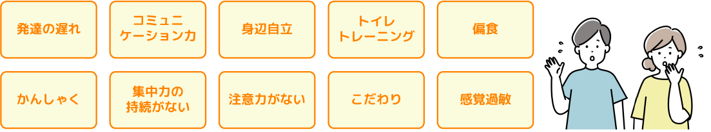
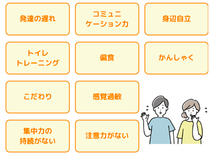
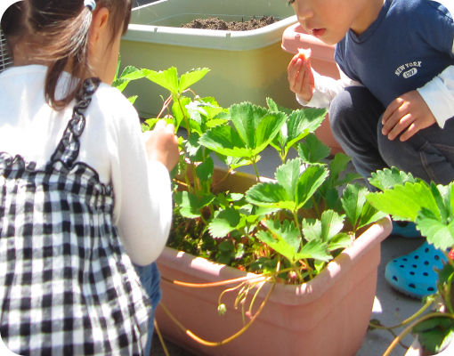

TOP ＞児童発達支援
子供の育ちや発達的変化の可能性は限りなくあると私たちは信じて支援しています。 どんな小さな悩みや不安もご相談ください。 お子様やご家族に寄り添った丁寧な療育を心掛けています。


とんとんの児童発達支援事業では、心身ともに発達の遅れが気になるお子様が集団生活や地域の中で育つときに生じる様々な課題を解決し、お子様の自尊心や主体性を育てながらできることを増やし、自信へと繋げていきます。 そして就学に向けて円滑な集団生活が送れるよう五感を刺激したプログラムや生活習慣が身に付けられるようなお子様が楽しめる内容の支援を行っています。
